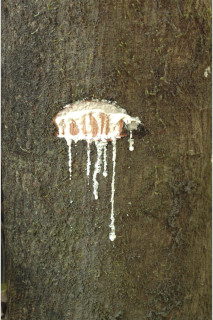
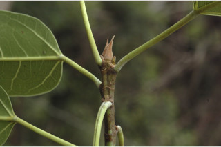
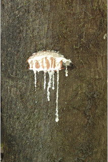
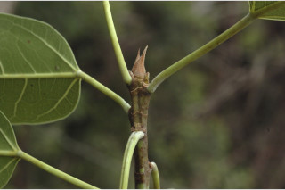
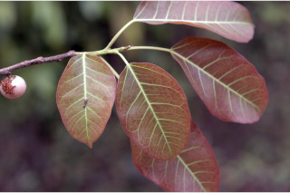
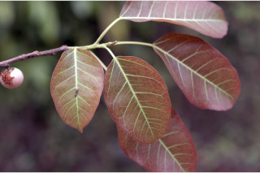

Deciduous trees, with few aerial roots.
ಕೆಲವು ಬಿಳಲು ಬೇರುಗಳನ್ನೊಳಗೊಂಡ ಎಲೆಯುದುರು ಮಾದರಿಯ ಮರಗಳು.
Deciduous trees, with few aerial roots.
இலையுதிர் மரம், குறைந்த எண்ணிக்கையில் தொங்கு வேர்களுடையவை.
Bole fluted; bark brownish, lenticellate; blaze pinkish.
ತೊಗಟೆ ಕೊರಕಲುಗಳನ್ನೊಳಗೊಂಡಿರುತ್ತದೆ;ದಟ್ಟ ಕಂದು ಬಣ್ಣದಲ್ಲಿರುತ್ತದೆ ಮತ್ತು ಸೂಕ್ಷ್ಮ ವಾಯು ವಿನಿಮಯ ಬೆಂಡು ರಂಧ್ರಗಳ ಸಮೇತವಿರುತ್ತದೆ ;ಕಚ್ಚು ಮಾಡಿದ ಜಾಗ ನಸುಗೆಂಪಾಗಿರುತ್ತದೆ.
Bole fluted; bark brownish, lenticellate; blaze pinkish.
மரத்தண்டு குறுக்குவெட்டுத் தோற்றத்தில் ஒழுங்கற்ற வளையமானது; மரத்தின் பட்டை ப்ரவுன் நிறமானது, பட்டைத்துளைகள் (லெண்டிசெல்லேட்) உடையது; உள்பட்டை பிங்க் நிறமானது.
Branchlets subterete, glabrous, lenticellate.
ಕಿರುಕೊಂಬೆಗಳು ಉಪ-ದುಂಡಾಗಿದ್ದು ರೋಮರಹಿತವಾಗಿರುತ್ತವೆ ಹಾಗೂ ಸೂಕ್ಷ್ಮ ವಾಯು ವಿನಿಮಯ ಬೆಂಡು ರಂಧ್ರಗಳ ಸಮೇತವಿರುತ್ತದೆ .
Branchlets subterete, glabrous, lenticellate.
சிறியநுனிக்கிளைகள் குறுக்குவெட்டுத் தோற்றத்தில் வளையமானது, உரோமங்களற்றது, பட்டைத்துளைகள் (லெண்டிசெல்லேட்) உடையது.
Latex white, profuse.
ಜಿನುಗು ದ್ರವ ಬಿಳಿಯಾಗಿದ್ದು ವಿಫುಲವಾಗಿರುತ್ತದೆ.
Latex white, profuse.
வெள்ளை நிற பால் அதிகளவு சுரக்கிறது
Leaves simple, alternate, spiral; stipules ca. 1 cm long, pubescent, caducous and leaving annular scar; petiole 3.7-6 cm long, canaliculate, glabrous; lamina 5-17.5 x 3-10 cm, elliptic, oblong, oblong-ovate, apex acuminate with blunt tip, base truncate, rounded or retuse, margin entire, glabrous, coriaceous; basally 3-nerved from base; midrib raised above; secondary_nerves 5-15 pairs, looped near margin; tertiary_nerves broadly reticulate.
ಎಲೆಗಳು ಸರಳವಾಗಿದ್ದು ಪರ್ಯಾಯ ಮತ್ತು ಸುತ್ತು ಜೋಡನಾ ವ್ಯವಸ್ಥೆಯಲ್ಲಿರುತ್ತವೆ; ಕಾವಿನೆಲೆಗಳು ಅಂದಾಜು1 ಸೆಂ.ಮೀ.ವರೆಗಿನ ಉದ್ದ ಹೊಂದಿದ್ದು ವಲಯಾಕಾರದ ಗುರುತುಗಳನ್ನುಳಿಸಿ ಉದುರಿ ಹೋಗುತ್ತವೆ;ತೊಟ್ಟುಗಳು 3.7 - 6 ಸೆಂ.ಮೀ. ಉದ್ದ ಹೊಂದಿದ್ದು ಕಾಲುವೆಗೆರೆ ಸಮೇತವಾಗಿರುತ್ತವೆ ಮತ್ತು ರೋಮರಹಿತವಾಗಿರುತ್ತವೆ;ಪತ್ರಗಳು 5- 17.5 X 3 - 10 ಸೆಂ.ಮೀ.ವರೆಗಿನ ಗಾತ್ರವಿದ್ದು ಅಂಡವೃತ್ತ, ಚತುರಸ್ರ- ಅಂಡದ ಆಕಾರ ಹೊಂದಿದ್ದು, ಮೊಂಡಾಗ್ರವುಳ್ಳ ಕ್ರಮೇಣ ಚೂಪಾಗುವ ತುದಿ, ಛಿನ್ನಾಗ್ರ, ದುಂಡಾದ ಅಥವಾ ಅಗಲವಾದ ಹಾಗೂ ದುಂಡನೆಯ ತುದಿಯಲ್ಲಿ ತಗ್ಗುಳ್ಳ ಬುಡ, ನಯವಾದ ಅಂಚು, ತೊಗಲನ್ನೋಲುವ ಮೇಲ್ಮೈ, ಹೊಂದಿದ್ದು ರೋಮರಹಿತವಾಗಿರುತ್ತವೆ; 3 ಆಧಾರ ನಾಳಗಳು ಪತ್ರಗಳ ಬುಡದಲ್ಲಿರುತ್ತವೆ ;ಮಧ್ಯ ನಾಳ ಮೇಲ್ಭಾಗದಲ್ಲಿ ಮೇಲೆದ್ದಿರುತ್ತದೆ ; ಎರಡನೇ ದರ್ಜೆಯ ನಾಳಗಳು 5 - 15 ಜೋಡಿಗಳಿದ್ದು ಅಂಚಿನ ಬಳಿ ಕುಣಿಕೆಗೊಂಡಿರುತ್ತವೆ;ಮೂರನೇ ದರ್ಜೆಯ ನಾಳಗಳು ವಿಶಾಲ ಜಾಲಬಂಧ ನಾಳ ವಿನ್ಯಾಸದಲ್ಲಿರುತ್ತವೆ.
Leaves simple, alternate, spiral; stipules ca. 1 cm long, pubescent, caducous and leaving annular scar; petiole 3.7-6 cm long, canaliculate, glabrous; lamina 5-17.5 x 3-10 cm, elliptic, oblong, oblong-ovate, apex acuminate with blunt tip, base truncate, rounded or retuse, margin entire, glabrous, coriaceous; basally 3-nerved from base; midrib raised above; secondary_nerves 5-15 pairs, looped near margin; tertiary_nerves broadly reticulate.
இலைகள் தனித்தவை, மாற்றுஅடுக்கமானவை, சுழல் போன்று அமைந்தவை; இலையடிச்செதில் 1 செ.மீ. நீளமானது, உரோமங்களுடையது, எளிதில் உதிரக்கூடியது மற்றும் வட்டவடுக்களை ஏற்படுத்துகின்றன; இலைக்காம்பு 3.7-6 செ.மீ. நீளமானது, குறுக்குவெட்டுத் தோற்றத்தில் கேனாலிகுலேட், உரோமங்களற்றது; இலை அலகு 5-17.5 X 3-10 செ.மீ., நீள்வட்ட வடிவானது, நீள்சதுர வடிவானது, நீள்சதுர-முட்டை வடிவானது, அலகின் நுனி அதிக்கூரியதுடன் அதன் முனை மழுங்கியது, அலகின் தளம் சதுர வடிவானது, வட்டமானது அல்லது சிறு பிளவுடையது (ரெட்யூஸ்), அலகின் விளிம்பு முழுமையானது, உரோமங்களற்றது, கோரியேசியஸ்; தளத்திலே 3 நரம்புகளை உடையது; மையநரம்பு மேற்புறத்தில் அலகின் பரப்பைவிட உயர்ந்து இருக்கும்; இரண்டாம் நிலை நரம்புகள் 5-15 ஜோடிகள், ஒன்றொடுன்று விளிம்பின் அருகில் (லுப்) இணைந்தவை; மூன்றாம் நிலை நரம்புகள் அகன்ற வலைப்பின்னல் போன்றவை.
Inflorescence syconia, axillary, paired, 1-1.5 cm across, globose, often obconical; flowers unisexual.
ಪುಷ್ಪಮಂಜರಿಗಳು ಸೈಕೋನಿಯ ರೀತಿಯವುಗಳಾಗಿದ್ದು , ಗೋಳ ಅಥವಾ ಕೆಲವು ವೇಳೆ ತಲೆಗೆಳಗಾದ ಶಂಖುವಿನ ಆಕಾರದಲ್ಲಿರುತ್ತವೆ ಮತ್ತು ಅಕ್ಷಾಕಂಕುಳಿನಲ್ಲಿ ಜೋಡಿಯಾಗಿರುತ್ತವೆ ಹಾಗೂ1 ರಿಂದ 1.5 ಸೆಂ.ಮೀ. ಅಡ್ಡಗಲತೆ ಹೊಂದಿರುತ್ತವೆ;ಹೂಗಳು ಏಕ ಲಿಂಗಿಗಳು.
Inflorescence syconia, axillary, paired, 1-1.5 cm across, globose, often obconical; flowers unisexual.
மஞ்சரி சைகோனியம், ஜோடியாக இலைக்கோணங்களில் காணப்படுபவை, 1-1.5 செ.மீ. குறுக்களவுடையது, கோளவடிவானது, பொரும்பாலும் தலைகீழ் கூம்பு வடிவானது; மலர்கள் ஓர் பாலானவை.
Syconium, pink when ripe; achenes smooth.
ಸೈಕೋನಿಯ (ಸಂಯುಕ್ತ ಫಲ) ಕಳೆತಾಗ ನಸುಗೆಂಪು ಬಣ್ಣ ಹೊಂದಿರುತ್ತವೆ;ಅಖೀನುಗಳು ನಯವಾಗಿರುತ್ತವೆ.
Syconium, pink when ripe; achenes smooth.
சைகோனியம், கனியும் போது பிங்க் நிறமானது; சிற்றுலர்கனி (அக்கீன்) வழவழப்பானது.
 





 
